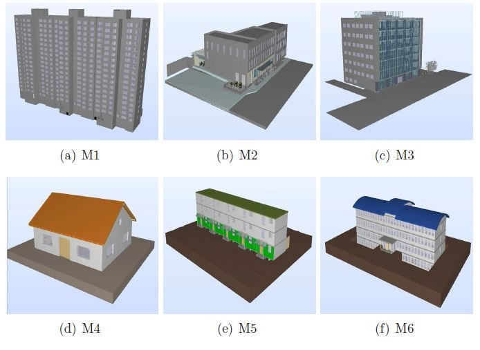

IFCCompressor: A content-based compression algorithm for optimizing Industry Foundation Classes files
aBIM Research Group, School of Software, Tsinghua University, Beijing, China
bKey Laboratory for Information System Security, Ministry of Education of China
cTsinghua National Laboratory for Information Science and Technology
dDepartment of Computer Science and Technology, Tsinghua University

Figure 1: A screen shot of the IFCCompressor tool. The left shows the main interface of the tool, where an IFC file is selected and compressed with or without the option “Float-Point Rounding (FPR)”. The right displays the comparison of file sizes between the original file and compressed one.
Abstract:
As the commonly used open and neutral file format for Building Information Modeling (BIM) data,
IFC (Industry Foundation Classes) aims to facilitate interoperability between various software platforms in the AEC industry.
However, the IFC files generated from different systems often contain enormous redundant information,
which will greatly limit IFC-based data storage and exchange, management, transmission and other applications. To address this issue, this paper
presents a content-based compression algorithm, named IFCCompressor, for optimizing IFC data files. Its goal is to make a large IFC file as small as
possible by reducing its redundant information. The algorithm is achieved through an iterative compression procedure based on an IFC model's tree
structure. The optimization procedure can be lossless or be constrained by an error bound. Compared with pure compression (ZIP) regardless of
information content, the presented algorithm starts with a comprehensive analysis of structure and content of IFC file, and then eliminates its
redundant information without changing the original file format. Unlike partial model extraction methods, our algorithm results in a complete IFC
model but with a more compact IFC physical file. In contrast with some commercial IFC optimization tools such as Solibri IFC Optimizer, the algorithm
can make the size of IFC files smaller. The experimental results show that the algorithm is particularly effective for some office/residential
building models with a large number of duplicated components. The compression rate with our algorithm is generally very high (the average is 40.32%)
for tested cases.
Links:
IFCCompressor[Website]
Source code[Download]
Test cases:
M1 [55.8MB] M2 [25.7MB] M3 [7.1MB] M4 [4.0MB] M5 [3.2MB] M6 [2.7MB] M1-M6 Packages [zip]
Source code[Download]
Test cases:
M1 [55.8MB] M2 [25.7MB] M3 [7.1MB] M4 [4.0MB] M5 [3.2MB] M6 [2.7MB] M1-M6 Packages [zip]
Paper(PDF) [2.79MB]
Results:


{kind=link}
Figure 2: Visualizing the models of six IFC files tested in the experiments.
Figure 3: Comparing the file sizes for six test models compressed using our algorithm (with or without FPR), where the FPR error bound is typically set as 10−2.
Acknowledgements:
The authors appreciate the comments and suggestions of all anonymous reviewers, whose comments significantly improved this paper. The research is
supported by the National Science Foundation of China (61472202, 61272229, 61003095) and the National Technological Support
Program for the 12th-Five-Year Plan of China (2012BAJ03B07). The second author is also supported by the Chinese 973 Program (2010CB328003). The third author is also
supported by the Chinese 863 Program (2012AA040902).
Citation
[Bibtex] Jing Sun, Yu-Shen Liu, Ge Gao, Xiao-Guang Han. IFCCompressor: A content-based compression algorithm for optimizing Industry Foundation Classes files. Automation in Construction, 2015, 50(2): 1-15. (SCI, 2013 Impact factor: 1.822)
Contact:
Dr. Yu-Shen Liu, Email address: liuyushen@tsinghua.edu.cn.
Jing Sun, Email address: jingsun001@gmail.com.
Jing Sun, Email address: jingsun001@gmail.com.